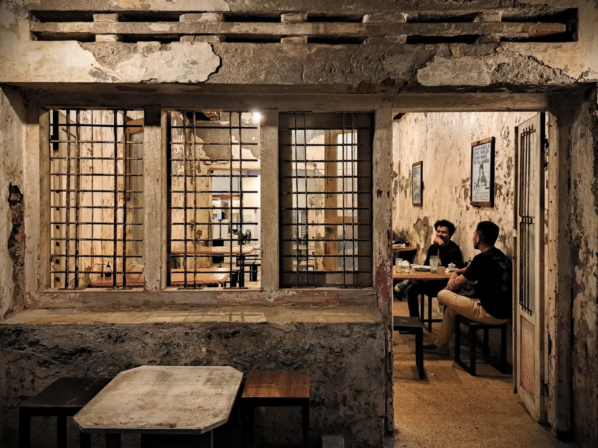
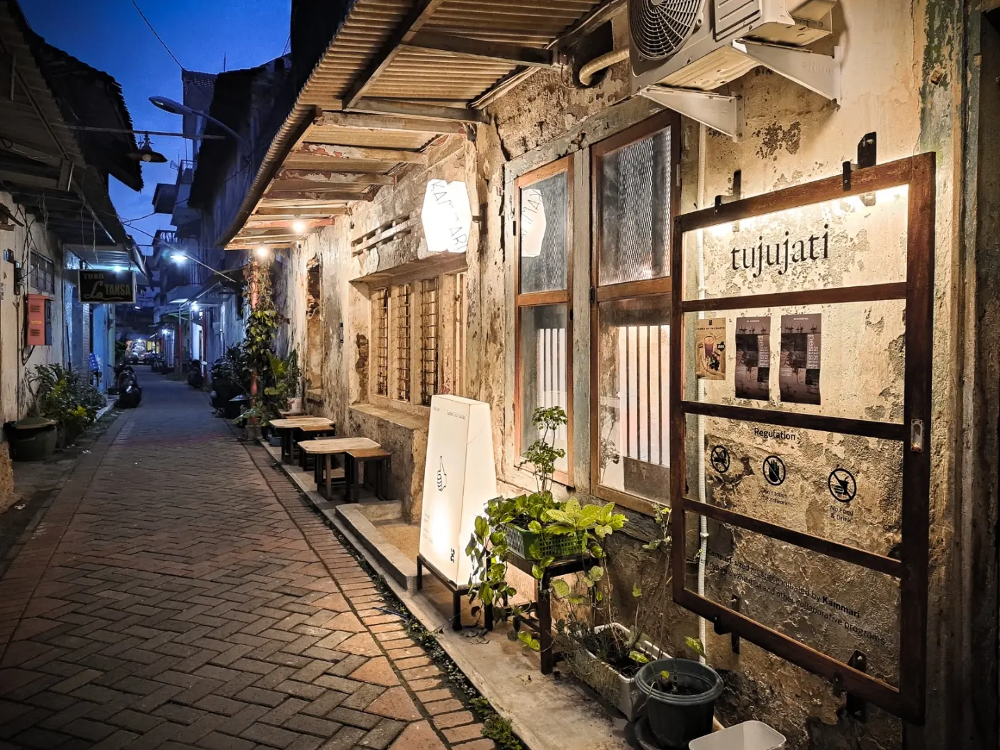

Surabaya
Ruang nyaman untuk bersantai dan menikmati kopi di Jl. Ketintang Baru II No. Kav. 7, Surabaya.
Buka setiap hari • 09.00–23.00 WIB
Buka di Google MapsKetenangan dalam
setiap seduhan.
100% biji pilihan Nusantara,
disangrai sendiri.


Kammari lahir dari keinginan menciptakan ruang tempat seduhan kopi dibuat dengan teliti dan tidak terburu-buru. Nama kami diambil dari kata yang dekat dengan kami: kamar, tempat paling nyaman untuk berpikir.
Kami bekerja sama dengan petani di Ijen, Argopuro, dan Dampit. Harga dibayar adil dan panen dicatat per lot.
Kedua ruang kami memakai ventilasi alami, batu bata ekspos, dan kayu lokal. Banyak sudutnya menghadap taman.
Setiap menu punya cerita dan cita rasa tersendiri. Temukan pilihan favoritmu untuk menemani setiap kunjungan di Kammari.
Dari workshop kopi hingga malam penuh musik. Temukan pengalaman baru bersama Kammari.
Kilas balik momen dan pengalaman yang pernah hadir bersama Kammari.
Dua cabang, dua suasana. Yuk, jelajahi Kammari dan temukan tempat yang paling dekat denganmu.
JELAJAHI KAMMARI
Klik outlet atau temukan cabang yang paling dekat denganmu.
Ruang nyaman untuk bersantai dan menikmati kopi di Jl. Ketintang Baru II No. Kav. 7, Surabaya.
Buka setiap hari • 09.00–23.00 WIB
Buka di Google MapsRoastery utama Kammari yang berlokasi di Jl. Samanhudi No. 17, Kemuteran, Gresik.
Buka setiap hari • 09.00–23.00 WIB
Buka di Google Maps